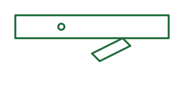
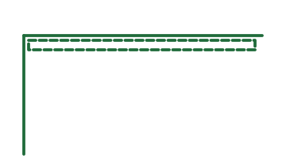
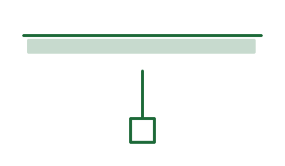

Demoveiledning. Ikke fra produsenten.
Med riktig forarbeid og rulleteknikk blir taket jevnt. Mal i én økt uten pause så kantene ikke tørker.
Du trenger: Rulle med skaft, rullebrett, pensel, malertape, sparkel, sandpapir korn 120
Fyll hull og sprekker med sparkel. La tørke, slip med korn 120 og tørk av støvet.

Tape langs vegger, lister og lamper. Trykk tapen godt ned så malingen ikke kryper under.

Mal en stripe på 5 cm langs kantene med pensel før du ruller.

Rull i felt på cirka en kvadratmeter, først på kryss, så glatt ut i samme retning, mot lyset fra vinduet.